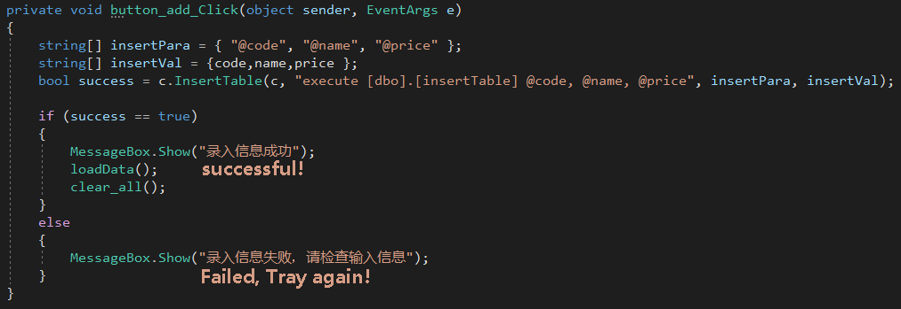
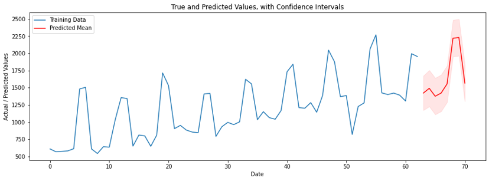
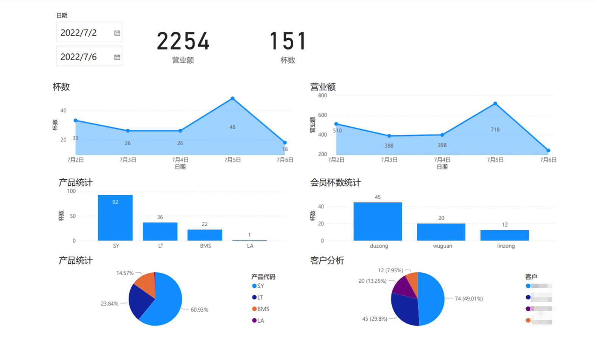

Full Stack with C# and TSQL
This ordering system is designed for a self-employed coffee shop named Double Coffee in China. The ordering system contains a user interface powered by C# with .NET Framework and a local Microsoft SQL Server.
This system contained orders processing, product modification, memberships searching, prepaid storages and operation summary.
I built the local database with Microsoft SQL Server, used stored procedures to insert and update tables of orders, products and memberships' information. I also used scalar functions to return searching results and summarized the daily sales. For the local database, I designed four relational tables, added constraints to auto insert date information and prevented any conflict input.
I Cleaned and analyzed four months of business data, reported to the employer using plots by Power BI and Excel, and built a SARIMA model to forecast future business. I also analyzed the customer data and built an RFM model that categorized the customers. I gave the business recommendations according to the different groups, recovered and increased customer stickiness by about 20%.
Acknowledgement: I would like to express my special thanks of gratitude to Daniel.
Last Update: 2022-08-11